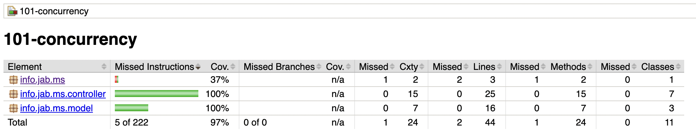

Detecting concurrency issues with JCStress
Juan Antonio Breña Moral
Follow the talk from your smartphone:
Example repository:

Agenda
- Who I am
- Expectations
- Preamble
- Root causes
- Concurrency tools: JCStress
- Takeaways
- References
- Q&A
Who I am
Juan Antonio Breña Moral
|
Engineering in Industrial Organization (M.S.) @ ICAI Head of Developer Relations @ Amadeus for developers Associate Professor @ ICAI STEAM Teacher @ Space Math @juanantoniobm | Github |
Expectations
- Generate curiosity about potential issues by concurrency.
- Understand better the Java Memory Model.
- Understand the evolution of concurrency in Java.
- Learn how to use JCStress in your projects
WIP
Expectations
The talk with not talk about:
Disclaimer

Note: I am not the author of JCStress
(Aleksey Shipilëv), but I will do my best.
üòä
Preamble
Imagine a development with some Business requirements:
Feature: Sum 2 numbers
Scenario: Sum 2 positive numbers
Given the POST endpoint /api/v1/sum2numbers
When the client send the request
Then the response includes the sum of the 2 parameters
Preamble
The code has a good Unit Tests:

Preamble
The code has a good Code Coverage:
Preamble
The code has a good Mutation Coverage:
Preamble
- The code has a good Score in Sonar.
- The code doesn´t have any Memory leak.
- The code has a good Throughput.
- The code has a good Pipeline support.
Preamble
But..., one day we receive an email from one User about unexpected results...
Preamble

Developer: "Weird, everything is fine in my side..."
Preamble

Developer: "...and using the data provided from the User, the new test doesn´t reproduce the issue in my local dev environment."
Preamble

Developer: "...maybe, I didn´t read the JLS (Java Language Specification), section 17.4. about Concurrency and the JSR 133"
Preamble
Developer: "...but now, we are in Production..."
Preamble
Java is a multithreading & multiprocessing programming language and Shared Memory is the Inter-Process Communication (IPC) technique for Threads.
And every Java developer needs to know it.
Root causes
But..
What do you think about possible root causes to generate Concurrency issues?
Root causes
I share some ideas about it:
Root causes
- Engineering teams bad designed.
- Project bad estimated.
- Cognitive load issues.
- Lack of specialists about concurrency in your BU.
- Poliglot environments
Root causes
- Lack of internal trainings about concurrency.
- Bad delegation of complex tasks.
- Projects with non-functional requirements well defined.
- Engineers more focused on cool features from Frameworks than language fundamentals.
Root causes
But if the developer doesn´t handle the JMM concepts in a fluent way...

Root causes
the party could begin in any moment...
Root causes
Non funcional requirements
Do you define properly the non functional requirements in your projects?

Root causes
Non funcional requirements
Do you know that exist an ISO Standard for Software Quality aspects?
Root causes
Non funcional requirements
ISO 25010
ISO 25010, titled “System and software quality models”, is a software quality standard. It describes the models, consisting of characteristics and sub-characteristics, for both software product quality, and software quality in use together with practical guidance on the use of the quality models.
Source: https://iso25000.com/index.php/en/iso-25000-standards/iso-25010Root causes
Non funcional requirements
ISO 25010

Source: https://iso25000.com/index.php/en/iso-25000-standards/iso-25010
Root causes
Non funcional requirements
ISO 25010
- Functional Suitability
- Performance efficiency
- Compatibility
- Usability
- Reliability
- Security
- Maintainability
- Portability
Root causes
Non funcional requirements
ISO 25010
Functional SuitabilityThis characteristic represents the degree to which a product or system provides functions that meet stated and implied needs when used under specified conditions.
Root causes
Non funcional requirements
ISO 25010
Functional SuitabilityThis characteristic is composed of the following sub-characteristics:
- Functional completeness - Degree to which the set of functions covers all the specified tasks and user objectives.
- Functional correctness - Degree to which a product or system provides the correct results with the needed degree of precision.
- Functional appropriateness - Degree to which the functions facilitate the accomplishment of specified tasks and objectives.
Root causes
Non funcional requirements
ISO 25010
Functional correctness - Degree to which a product or system provides the correct results with the needed degree of precision.
Root causes
"At the heart of any reasonable definition of thread safety is the concept of correctness. If our definition of thread safety is fuzzy, it is because we lack a clear definition of correctness. Correctness means that a class conforms to its specification. A good specification defines invariants constraining an object’s state and postconditions describing the effects of its operations."
- Brian Goetz, Java Concurrency in Practice, 2006Root causes
Concurrency models
Source: https://redmonk.com/sogrady/2022/03/28/language-rankings-1-22/
Root causes
Concurrency models
Every programming language implement different approaches about Concurrency and not all of them are in the same stage.
That detail is important when you apply "T-shaped" strategies.
Root causes
Concurrency models
How Concurrency evolves in Java:
| Java version | Key features | Release data |
|---|---|---|
| Java 1.0 | Java OS Threads | 23/01/1996 |
| Java 1.5 | JSR 133, java.util.concurrent.* | 30/09/2004 |
| Java 1.7 | Fork/join framework | 07/07/2011 |
| Java 1.8 | CompletableFuture | 18/03/2014 |
| Java 19 | Virtual Threads, Structured Concurrency | 20/09/2022 |
Root causes
Design patterns that impacts you
- CDI, Contexts and Dependency Injection

Root causes
Design patterns that impacts you
CDI (Contexts and Dependency Injection) is a standard dependency injection framework included in Jakarta EE. It allows us to manage the lifecycle of stateful components via domain-specific lifecycle contexts and inject components (services) into client objects in a type-safe way.
Concurrency tools: JCStress
- Introduction
- What are the benefits?
- Creating your first JCStress test
- Does exist plugins?
- What projects are using the JCStress?
- Limitations
Concurrency tools: JCStress
Introduction
The Java Concurrency Stress (jcstress) is the experimental harness and a suite of tests to aid the research in the correctness of concurrency support in the JVM, class libraries, and hardware.
https://github.com/openjdk/jcstressConcurrency tools: JCStress
What are the benefits?
- Increase the capacity to test for concurrency in your Java classes that you know that the class is sharing state.
Concurrency tools: JCStress
Creating your first JCStress test
- Review in your project, classes where the team consider that it is necessary to maintaing the state.
- Review what Java concurrency tools are more suitable for the problem.
Concurrency tools: JCStress
Creating your first JCStress test
In Java, you could use:
- volatile
- Locks
- Atomic objects
Concurrency tools: JCStress
Creating your first JCStress test
There are 3 main issues with multithreading:
- Atomicity
- Visibility
- Reordering
Concurrency tools: JCStress
Creating your first JCStress test
- Atomicity / Race Conditions: Atomicity is one of the key concepts in multi-threaded programs. We say a set of actions is atomic if they all execute as a single operation, in an indivisible manner.
Check-then-act Read-modify-write
Concurrency tools: JCStress
Creating your first JCStress test
Atomicity / Race Conditions:
Concurrency tools: JCStress
Creating your first JCStress test
- Visibility / Caching / stale memory : which means ensuring that a change to a shared variable made by one thread is visible to the rest of the thread.
Concurrency tools: JCStress
Creating your first JCStress test
- Reordering / Compiler and CPU optimisations: The JVM could change the order of executions.
Concurrency tools: JCStress
Creating your first JCStress test
- Atomicity
- Visibility
- Reordering
volatile can solve 2 & 3, but can't solve 1. synchronized/explicit locks can solve 1, 2 & 3.
Source: Stack OverflowConcurrency tools: JCStress
Creating your first JCStress test
./gradlew clean jcstress --tests "Example_01"
./gradlew clean jcstress --tests "Example_02"
Concurrency tools: JCStress
Creating your first JCStress test
./gradlew clean jcstress --tests "Example_01"
RESULT SAMPLES FREQ EXPECT DESCRIPTION
1, 1 67,175,767 12.75% Interesting Both actors came up with the same value: atomicity failure.
1, 2 230,619,181 43.76% Acceptable actor1 incremented, then actor2.
2, 1 229,163,644 43.49% Acceptable actor2 incremented, then actor1.
./gradlew clean jcstress --tests "Example_02"
RESULT SAMPLES FREQ EXPECT DESCRIPTION
1, 1 50,158,990 11.27% Interesting Both actors came up with the same value: atomicity failure.
1, 2 198,225,259 44.55% Acceptable actor1 incremented, then actor2.
2, 1 196,592,903 44.18% Acceptable actor2 incremented, then actor1.
Concurrency tools: JCStress
Creating your first JCStress test
Fixing the first issue:
./gradlew clean jcstress --tests "Example_03"
./gradlew clean jcstress --tests "Example_04"
./gradlew clean jcstress --tests "Example_05"
Concurrency tools: JCStress
Creating your first JCStress test
@JCStressTest : Annotation which allow executing the class
@Outcome : Annotation to define expected results
@State : The class annotated with state will store the object state
@Actor : The elements which run the
@Result
Concurrency tools: JCStress
- I: int
- Z: boolean
- F: float
- J: long
- S: short
- B: byte
- C: char
- D: double
- L: object
Concurrency tools: JCStress
WIP
Takeaways
WIP
References
- https://docs.oracle.com/javase/specs/jls/se8/html/jls-17.html
- http://www.cs.umd.edu/~pugh/java/memoryModel/jsr-133-faq.html
- https://web.archive.org/web/20220601003130/http://gee.cs.oswego.edu/dl/jmm/cookbook.html
- https://web.archive.org/web/20220601003130/http://gee.cs.oswego.edu/dl/html/j9mm.html
- https://download.oracle.com/otndocs/jcp/memory_model-1.0-pfd-spec-oth-JSpec/
- https://openjdk.org/jeps/193